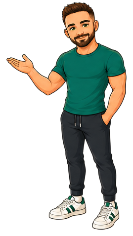
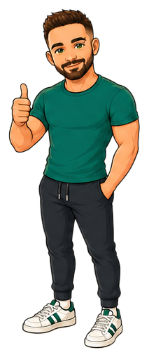
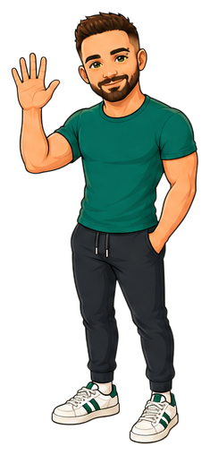

ההחלטות שלכם עוברות עם העבודה.
כשאתם ממשיכים את אותה משימה בכלי אחר, אתם מעבירים לשיחה החדשה את החומרים שאספתם ואת ההחלטות שמכוונות את השלב הבא.
הקורס שבונה סביבכם שיטת עבודה עם AI.
אתם כבר עובדים עם AI. זה לא עוד כלי שצריך ללמוד, זו שיטת עבודה שנבנית סביבכם: בניית סוכנים, ניתוח מידע, ניהול זיכרון וידע והרכבת תהליכים להכנת תוצרים מקצועיים, בליווי אישי לאורך כל הדרך.
לא עוד כלי שצריך ללמוד. שיטת עבודה שנבנית סביבכם.
כל הסיפור הזה התחיל ב-TailorPlayed, הסטודיו שלי שבונה משחקי קופסה מאפס מתוך סיפור אישי של לקוח. רציתי לבנות את המשחקים בעזרת AI, כך שהסיפור יהפוך למכניקה של המשחק, ולא מצאתי מי שיסביר לי איך לעשות את זה. ישבתי לילות שלמים מול המסך, ניסיתי, טעיתי, ותוך כדי הקמת הסטודיו פיתחתי שיטות עבודה משלי.
כדי שהסטודיו יעבוד הייתי חייב לפתור משימות שכל עסק פוגש: לסדר מידע במקום מרוכז, להפוך תשובות משאלון לתוכן מותאם אישית, לכתוב טקסט שנשמע אנושי ולא כמו AI, להקים אתר, לשמור על מראה אחיד בתמונות ובסרטונים, ולבדוק כל תוצר לפני שהוא יוצא.
בדרך הבנתי שמה שחיפשתי היה AI שסוף סוף מתאים לי. AI שמתאים זה AI שנבנה סביב מי שמשתמש בו.
את השיטות שבניתי בלילות בסטודיו הבאתי לעבודה, שם לכל קבוצה היו משימות אחרות ואת ההדרכות בניתי בהתאמה אישית. בהמשך הדרכתי בעוד ארגונים, וגיליתי שהפתרונות שאנשים צריכים בעבודה היומיומית הם לרוב הרבה יותר פשוטים ממה שהם דמיינו.
לאט לאט התחלתי ללמד גם באופן עצמאי, שיעור פה והרצאה שם. נתתי לכל דבר את השם הנכון וסידרתי את הכל לשיטה ברורה, וככה נולד הקורס.
המטרה שלי היא שכל מי שלומד איתי יזהה בעצמו את המשימה הבאה בעבודה שלו, וידע לבנות לה פתרון גם כשאני כבר לא לידו.
מנחה הקורס
בן עקיבא הוא מייסד TailorPlayed. ב-PassportCard הוא יזם את תפקיד ה-AI Champion, בנה הדרכות מותאמות אישית לצוותים טכניים, לצוותי הדרכה ולעובדים ללא רקע טכני, וליווה מנהלים ואת מנכ"ל הארגון. בהמשך הוביל קורסים וסדנאות AI לארגונים ולהנהלות בישראל ובחו"ל, בעברית ובאנגלית. מאחוריו ניסיון כמדריך, סטודנט מלווה ורכז בתוכניות נוער, משלחות ומחנות קיץ בארץ ובחו"ל, שם כתב והעביר תכנים חינוכיים. הוא בוגר הטכניון בהנדסת תחבורה ודרכים ועבד כמפתח תוכנה לפני שעבר לתחום ה-AI.

אחרי שלאמא שלו גילו סרטן, בן עקיבא בנה עם Claude מערכת לסידור מסמכים ומשימות, מתוך אותה שיטת עבודה שנלמדת בקורס. ב-Cancel Cancer תמצאו את הסיפור, הסרטונים וערכה חינמית להתקנה.
אתם כבר עובדים עם AI ביום-יום אבל מרגישים שאתם לא מוציאים מזה את כל מה שאפשר.
אתם יודעים שאפשר להגיע לתוצאות גבוהות יותר, אבל אין לכם זמן או דרך ללמוד את זה לבד.
אתם רוצים לעצב שיטת עבודה עקבית במקום לקוות שהתוצר של ה-AI ייצא טוב במקרה.
אתם מובילים צוות וזקוקים למסגרת עבודה מוגדרת וברורה שתעבוד היטב גם עבור אחרים.
אתם בונים סביבת עבודה משלכם שבה יש מקום לידע שלכם, להחלטות שכבר קיבלתם, לכללי העבודה ולסוכנים. כשאתם פותחים שיחה חדשה, אתם מביאים אליה משם את מה שצריך כדי להמשיך.
כשאתם ממשיכים את אותה משימה בכלי אחר, אתם מעבירים לשיחה החדשה את החומרים שאספתם ואת ההחלטות שמכוונות את השלב הבא.
אתם מגדירים את ה-DNA של העבודה שלכם, כלומר איך שהתוצרים שלכם נשמעים, בנויים ונראים. כשאתם מבקשים תוצר מסוג חדש, כמו מצגת, עמוד נחיתה או רקע לזום, הסוכן קורא את הכללים ששמרתם ואתם משווים את התוצאה למה שאישרתם כדי לוודא שהקו שלכם נשמר.
אתם שומרים אצלכם את הסוכנים, מסדרים בנפרד את העובדות, הידע וכללי העבודה, ומשתמשים במה ששמרתם גם בכלי נוסף.
אתם יודעים איפה החומר שכבר אספתם, איפה כל סוג עבודה נעשה ובאיזה כלי להמשיך בשלב הבא.
כשמשהו בתוצר דורש תיקון, אתם לא מתקנים אותו ידנית כל פעם מחדש, אלא הופכים את התיקון לכלל במקום הנכון כדי שלא תצטרכו להסביר פעמיים.
מסע שמטפס מבחירת הכלי הנכון ועד לזיהוי הזדמנות חדשה ובניית סוכן עבורה, שלכם, לבד.
לבחור את הכלי הנכון לכל משימה.
לפרק משימה מורכבת לתכנון ברור, כך שה-AI יבצע בלי לנחש.
לבנות בסיס ידע אישי ושכבות זיכרון, כך שה-AI יכיר אתכם ואת העבודה שלכם.
להריץ Deep Research: מחקר רב-מקורות שחוזר עם תשובה מבוססת ומנומקת.
להריץ משימות ותהליכים אוטומטית, ולשלוט בהם מהנייד.
החלטה ארכיטקטונית: מתי צריך סוכן ומתי מספיק סקיל בודד.
לבנות סקילים שמרחיבים את הסוכנים לפי התפקיד.
לעצב סוכני AI עצמאיים שמבצעים משימות חוזרות בעקביות.
לתאם כמה סוכנים שעובדים יחד על פרויקט אחד.
להפיק תוצרים מקצועיים בזרימה אחת, מרעיון ועד תוצר סופי.
לזהות הזדמנויות חדשות בעבודה ולבנות עבורן סוכנים, באופן עצמאי.
לאורך הקורס תבנו ותפיקו ארסנל שלם שנשאר אצלכם, מותאם בדיוק לעבודה שלכם.
אותה שיטה בדיוק, בהיקף ובפורמט שמתאימים לכם.
חמישה מפגשים של שלוש שעות, עם יחידות בית לפני ואחרי כל מפגש. הקבוצה קטנה, והכל נבנה על החומרים האמיתיים שלכם.
מסלול פרטי שנבנה כולו סביבכם: התוכן, הקצב והדוגמאות מגיעים מהעבודה שלכם.
יום עבודה מרוכז שבו הצוות בונה סוכנים למשימות אמיתיות מהעבודה, ויוצא בסוף היום עם תוצרים מוכנים לשימוש.
סדנה ממוקדת או קורס מותאם לצוות, לכלים ולצרכים שלכם, בפורמט שנבנה יחד.

אותם כלים שאני עובד איתם יום-יום, ותצאו שולטים בכולם.

כתבו לי כמה מילים על העבודה שלכם, ונבדוק יחד איזה מסלול יתאים לכם.
ben.akiva@tailorplayed.com